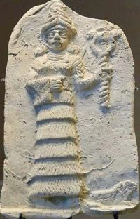
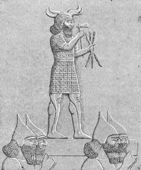
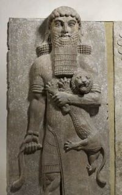

Goden en Godinnen
1. Anu was de oudste Mesopotamische godheid van het hemelgewelf. Zijn functie was Eerste onder de scheppers. Het zou een Akkadische naam zijn. Als epitheta had hij Hemelstier en de vruchtbare fokstier.
Zijn cultus was prominent verbonden met Uruk, het Bijbelse Erech, maar raakte op de achtergrond in de Babylonisch-Assyrische tijd, waar de cultus van Marduk en Aššur overheersten. Toch zou er in de 3e eeuw voor Christus een tijdelijke heropleving van de Anucultus hebben plaatsgevonden.
2. Antu of Antum, ook Anatu, was in de Akkadische mythologie de oorspronkelijke metgezellin van Anu, een creatiegodin, die later zou worden vervangen door Ishtar. Hun kinderen waren de Anunnaki en de Utukki.
Antu is afgeleid van de oudere Sumerische Ki, maar de kosmogonie is veranderd om haar in een afzonderlijke traditie te laten passen. Antu was de dominante verschijning in het Babylonische akit festival dat tot 200 voor Christus werd volgehouden.
Haar zo relatief recent voorkomen leidde mogelijk tot identificatie met de Griekse godin Hera.
3. Enlil was de stadsgod van Nippur en hoofdgod van Soemerië. Samen met zijn broer en voorganger Enki was Enlil afstammeling van de oudere oppergod Anu, de Hemelstier. Enlil werd ten koste van zijn broer Enki hoofdgod.
'En' betekent (Grote) Heer of Here. Enki (En'Ki ) betekent Grote Heer van de Aarde. En was ook de titel van priesters en priesteressen. De zoon van Enlil was Ninurta. De zuster van Enlil was Ninhursag, moedergodin.
'Nin' is het Soemerische woord voor vrouw/godin. Maar ook bij mannelijke goden kan hun naam beginnen met 'Nin'.
Hij werd later in belang verdrongen door de god Marduk door toedoen van Nebukadnezar I. Marduk verstootte geleidelijk aan Enlil van het schouwtoneel. Enlil bleef waarschijnlijk wel aanbeden worden maar niet meer als oppergod van het pantheon.
4. Ninlil was in de Mesopotamische mythologie de Soemerische graangodin, die soms met Ninhursag werd geassocieerd.
Zij woonde in Dilmun met haar ouders. Volgens de mythe zag Enlil haar op een dag baden in een kanaal nabij Nippur en kon niet aan de drang weerstaan om haar schoonheid te proeven. Hij verkrachtte Ninlil en maakte haar zwanger met water. Als straf werd Enlil toen uit Nippur gebannen en ter dood veroordeeld. Maar Ninlil volgde hem, zodat hij zou zien hoe zij hun kind baarde. Dat werd de maangod Nanna of Sin.
Later werd zij weergodin, zoals Enlil een weergod was. Ze werd mogelijk geassocieerd met de zuidenwind, en Enlil met de koude noorderwindstormen.
Ninlil zou ook aan de basis kunnen liggen van de demon Lilitu in het Gilgamesj-epos.
5. Enki was één van de belangrijkste goden in het pantheon van Mesopotamië. Hij wordt door de Babyloniërs Ea genoemd, maar is meer bekend onder zijn Soemerische naam Enki.
Hij is de god van de afgrond of het diepe water, de abzu, de belangrijkste (zoet)watergod en de god van de wijsheid in de Soemerische mythologie.
Enki schiep de mensen door klei te mengen met het bloed van de opstandige igigu Kingu, de zoon van Tiamat. Kingu en de igigi (draken) waren door Marduk, de leider van de annunaki overwonnen. De mensen moesten de rol van de igigi als dienaren van de annunaki overnemen.
Volgens het mythologische Atrahasis epos was Enki de schepper van de mens, maar ook de redder van de mens. De goden wilden immers de mensheid vernietigen, maar Enki wierp zich steeds op als beschermer. Enki waarschuwde een trouwe volger, Atrahasis, ('de Bijbelse Noach uit Mesopotamië') over de plannen van de Oppergoden om de mensheid (geschapen door Enki) te vernietigen met een zondvloed.

6. Ningikuga ('Vrouwe van het Zuiver Riet') was in de Soemerische mythologie een godin van rietland en moerassen. Zij was één van de echtgenotes van Enki, bij wie zij de moeder werd van Ningal. Zij was zelf de dochter van Anu en Nammu.
In twee bronnen, een Oud-Babylonische balbale-compositie en in een liefdeslied, is Ningikuga de naam van Ningals moeder. Bij uitbreiding fungeerde ze als grootmoeder van Inanna .
7. Nanna / Sin is de Soemerische maangod, zoon van de luchtgod Enlil en Ninlil, de graangodin.
Zijn gezellin is Ningal, zijn kinderen zijn onder andere de zonnegod Utu (of Shamash), Inanna (of Ishtar) en de dondergod Adad.
Hij is ook de vader van Nusku, de god van het vuur.
Hij wordt altijd weergegeven als godheid met een gehoornde kroon (hemelstier), terwijl hij in een boot in de vorm van een liggende maansikkel zit. De maansikkel was sinds de 25e eeuw voor Christus het symbool van Nanna.
Zijn residentie is de goedbewaarde Ziggurat van Ur (de tempel van Ikinugul of Ekishnugal) uit het 21e eeuw voor Christus Ook in Harran in Opper-Mesopotamië was hij de patroongod.

8. Ningal ("De Grote Dame") was in de Soemerische mythologie een godin van het rietland. Zij was de dochter van Enki en Ningikuga.
De maangod Sin was haar echtgenoot. Bij hem kreeg zij de zonnegod Utu, de godin Inanna, en volgens sommige teksten ook Ishkur. Ze wordt vooral in Ur erkend.
Ze werd vooral vereerd door de Derde Dynastie van Ur en later door de koningen van Larsa.
De Ur-Nammu Stele geeft aan dat zij tijdens zijn regering waarschijnlijk de hoogst gerangschikte godin in het plaatselijke pantheon was.
Waarschijnlijk is het een oude godin van koeherders in het moerasland van zuid-Mesopotamië.

9. Utu / Shamash was in de Soemerische en Armeense mythologie de god van de Zon en Gerechtigheid.
Utu was de zoon van de maangod Nanna (of Sin) en de godin Ningal, die eveneens een lunair aspect bezat. Zijn zus was Inanna, de godin van de liefde.
Enlil wordt soms ook als zijn vader aangewezen. Met de godin Aja verwekte hij de zonen Enmerkar, Gud en Meskiaggasar.
In het Gilgamesh-epos brengt de held Gilgamesh een offer aan Utu en vraagt hem om ondersteuning bij zijn reis naar het "Land van de Levenden". Uiteindelijk helpt Utu hem door zeven slechte demonen, verantwoordelijk voor slecht weer, te verlammen.
10. Inanna (later Ishtar) was een hemelgodin en de allergrootste godin van de Soemerische religie.
Gedurende haar bestaan kreeg zij meerdere, soms tegenstrijdige rollen. Zo was zij als Ninanna de dame van de hemel en als Ninsianna de godin van Venus.
Daarnaast was zij de vruchtbaarheidsgodin en de godin van de liefde, maar ook de godin van de oorlog en de prostitutie en beschermer van de wilde dieren.
De vader van Inannu was Nanna, maar in andere mythen wordt Anu als haar vader genoemd.
Haar echtgenoot was Dumuzi, de halfmythische koning, en andere jonge mannen, die haar liefde fataal werd. Haar zuster was Ereshkigal, de godin van Kur, de Onderwereld.

11. Ishkur / Adad was de stormgod van regen, wind en donder. Volgens een groot tal van legenden was Anu zijn vader.
Ishkur zorgde naar verluidt voor de jaarlijkse gunstige winden en regens, waardoor de rivieren gingen overstromen en vruchtbaar slik op het land brachten. Hij droeg dan ook het epitheton Heer van de Overvloed.
Hij zou in staat zijn in de toekomst te kijken en werd ook tot de goden gerekend die ooit een vernietigende zondvloed over de mensheid joegen.
Hij werd vaak voorgesteld terwijl hij op een stier (teken van vruchtbaarheid) stond, zwaaiend met een bundel van drie bliksemschichten.
12. Ninhursag (vrouwe van de bergen) is één van de zeven grote goden van de Soemerische religie, de zeven Anunnaki. Deze moedergodin werd vereerd in de steden Ur, Mari en Lagash.
Zij wordt als één van de vier grootste godheden van de Soemerische godenwereld beschouwd na An, Enlil en Enki. Samen met Utu, Inanna en Nanna vormden deze de zeven hoofdgoden van Soemerië, zij die het lot bepalen.
Zoals haar Egyptische tegenhangster Hathor verscheen zij soms in de vorm van een koe. Mesopotamische koningen noemden zichzelf graag als geliefd door Ninhursag. Er werden kalveren in de rol van 'eerstgeborene' aan haar geofferd.
In een mythe speelt zij een belangrijke rol bij de schepping der mensheid. Meer dan Inanna is zij de vruchtbaarheidsgodin en godin der geboorte.
Koningen
Etana is een legendarisch figuur uit de geschiedenis van Mesopotamië, die uiteindelijk tot mythisch figuur is verheven, zoals de koningen van Uruk: Enmerkar, Lugalbanda en Gilgamesh.
Etana was koning van de stadstaat Kish. Onder deze titel komt hij in de Sumerische koningslijst voor, waar hij wordt voorgesteld als "de schaapsherder, die ten Hemel is gerezen en voor de orde in heel het land heeft gezorgd". Dezelfde tekst kent hem een rijk toe dat 1500 jaar heeft bestaan.
Hij is het hoofdpersonage in het verhaal dat de mythe van Etana wordt genoemd, waar hij probeert de Hemel te bereiken met als doel een plant te bemachtigen die het hem mogelijk zou maken een mannelijke opvolger te verwekken voor de troon van Kish.
Enmebaragesi, circa 27e eeuw voor Christus, was een Soemerische koning van de stadstaat Kish. Volgens de lijst van koningen van Soemerië onderwierp hij Elam, regeerde hij 900 jaar en werd hij gevangengenomen door Dumuzid, koning van Uruk en voorganger van Gilgamesh.
Enmebaragesi is de eerste Soemerische koning van wie het bestaan archeologisch is aangetoond. Twee scherven met zijn naam werden gevonden in de stad Nippur, waar hij volgens de Soemerische Tummal Kroniek de eerste tempel zou hebben gebouwd.
Enmerkar was de tweede koning van Uruk. Hij volgde zijn vader Mesh-ki-ang-gasher (zoon van Utu) op, nadat deze in de zee was verdwenen. Volgens de legende liet Enmerkar Uruk bouwen en regeerde hij 420 jaar.
Enmerkar is bekend uit een aantal Soemerische legenden, de bekendste is "Enmerkar en de heer van Aratta". In deze legende wordt voor het eerst op een kleitablet geschreven, omdat de communicatie tussen Enmerkar en zijn rivaal zo omvangrijk werd, dat daardoor de boodschappers deze informatie niet meer allemaal konden onthouden.
Hij wordt zelf als zoon van de god Utu / Shamash genoemd.
In deze periode konden alle mensen nog in dezelfde taal spreken met hun god Enlil. Enki, god van magie en beschaving, was echter niet over hun gedrag te spreken en besloot 'de tongen in hun mond van elkaar te vervreemden'. Het verhaal van de 'Toren van Babel' zou hier later van zijn afgeleid.
Lugalbanda was de derde koning van Uruk.
De legende gaat dat hij getrouwd was met de godin Ninsun en dat zij samen de ouders waren van de legendarische Gilgamesh.
De naam Lugalbanda komt een aantal keer voor in het Gilgamesh-epos. Er zijn echter ook twee teksten gevonden waarin Lugalbanda de hoofdrol speelt. In deze teksten vervult hij nog niet de rol van koning; er wordt vooral gesproken over zijn militaire en politieke carrière onder koning Enmerkar.
In andere teksten staat dat hij een aantal jaren later Enmerkar opvolgde.

Gilgamesh was de vijfde koning van Uruk. Hij regeerde tussen 2652 en 2602 voor Christus en was de opvolger van Dumuzi.
In de Soemerische literatuur wordt hij beschreven als de zoon van koning Lugalbanda en de godin Ninsun, waardoor hij moet worden beschouwd als twee derde god en één derde mens.
Na zijn dood kreeg Gilgamesh de status van legendarische held voor de inwoners van Mesopotamië en omliggende regio's.
Zijn daden werden beschreven in literaire meesterwerken en afbeeldingen van hem duiken vanaf de 2de helft van het 3de millennium steeds vaker op.
Ur-Nanshe, circa 2494-2465 voor Christus, was priester-koning van Lagash.
Hij was de stichter van een dynastie die vijf generaties stand zou houden. Soemerië was in zijn dagen een land waarin de stadstaten onophoudelijk om overwicht streden en het noordelijker gelegen Kish had geruime tijd de rol van hoofdstad opgeëist. Lagash was in een geschil verwikkeld met de buursteden Ur en Umma.
Een zeeslag tegen Ur bezorgde Ur-Nanshe de overwinning en overmacht op deze stad, toen nog dichter bij de zee gelegen. Een veldtocht tegen Umma eindigde in de gevangenneming en waarschijnlijk de dood van Pabilgaltuk, de vorst van Umma.
Ur-Nanshe was vooral een bouwer. Er is bijvoorbeeld een kalkstenen tablet dat de bouw van de Bagara-tempel memoreert, inclusief de bouw van de tempelkeuken.
Lugalzagesi of Lugalzaggisi was van 2340 tot 2316 voor Christus ensi (vazalvorst) van Umma. Hij wist een flink deel van het verdeelde en door burgeroorlog verscheurde Soemerië te veroveren en kon zich zo 24 jaar koning van Soemer, "Koning van de vier windstreken", noemen. Een rijk dat zich uitstrekte van de Perzische Golf tot aan de Middellandse Zee.
Hij veroverde eerst Girsu en nam wraak voor de twee eeuwen vernedering die Umma van Girsu had moeten verduren door de stad te verwoesten. Hij stak de Anatsura, de plaatselijke tempel, in brand en vergoot bloed in het heiligdom E-engur van de godin Nanshe.
Lagash moest het ontgelden. Koning Uruinimgina werd gedood en de tempel van Ningirsu geplunderd. Ook Uruk viel en in Nippur is een inscriptie gevonden waarin Lugalzagesi pocht op zijn heerschappij over heel Soemerië.
Sargon van Akkad of Sargon de Grote was de stichter van de dynastie van Akkad en eerste stichter van een groot Semitisch rijk in Mesopotamië. Hij regeerde van circa 2334-2279 voor Christus. Zijn moeder was een hogepriesteres, schreef hij. Zijn vader was onbekend en zou een nomade zijn.
Over zijn geboorte en jeugd bestaan veel legenden. De geboorte zou geheim zijn gehouden. Sargon zou volgens de tekst na zijn geboorte in een mand zijn gestopt en aan de Eufraat zijn toevertrouwd, een legende die later ook aan Mozes is toegeschreven. Een tuinier zou het kind in de mand op de rivier hebben zien drijven en voedde hem op.
Na gewerkt te hebben als tuinier ging Sargon werken als wijnschenker voor koning Ur Zababa van de stad Kish.
Sargon wist de koning van de troon te stoten en zelf koning van Kish te worden. De koning van Umma vond de troonwissel in Kish niet erg zuiver en verklaarde Sargon de oorlog. Deze koning, Lugalzagesi, werd echter door Sargon verslagen en in Uruk voor de tempel neergezet met een halsband om, overgeleverd aan de spot van het volk.
Sargon regeerde zeer lang over zijn rijk, tussen de 44 en 56 jaar. Toen hij stierf, namen zijn twee zonen de leiding over. Zij hadden daarbij weinig geluk, ze werden allebei vermoord.
Gudea (circa 2140-2122 voor Christus) was een ensi van Lagash in Soemerië.
Hij was een vazal van de laatste vorsten van de Guti, een barbaars volk uit het Zagrosgebergte, maar in zijn tijd begon de greep die de Guti hadden op de individuele stadstaten danig te verzwakken. Gudea kon daarom goeddeels zijn eigen gang gaan.
Hij was een goed bestuurder die veel deed om de stad Lagash weer tot bloei te brengen en wijdde zich aan het bouwen en herbouwen van tempels.
Van hem zijn een groot aantal standbeelden gevonden, waar hij vaak knielend wordt afgebeeld, biddend tot zijn goden. Zijn voornaamste godheid was Ningirsu (ook wel Ninurta genoemd), die werd geassocieerd met de irrigatie van het akkerland.
Hij werd opgevolgd door zijn zoon Ur-Ningirsu.
Ur-Nammu (2112-2090 voor Christus) was ensi van Ur onder koning Utu-Khegal van Uruk. Ur-Nammu kwam tegen hem in opstand en wist zichzelf tot koning (lugal) van Soemerië en Akkad uit te roepen.
Hij kreeg al snel te maken met Namhani, de schoonzoon van Ur-Bau van Lagash, die trachtte Soemerië onder zijn gezag te brengen. Hij versloeg Namhani en doodde hem. Het was waarschijnlijk Ur-Nammu die het bevel gaf wraak te nemen op Namhani en diens vrouw Ninhedu door al hun beelden te beroven van hun gelaatstrekken en de inscripties met hun namen. Dit betekende dat de goden niet langer door hen werden begroet en zij dus door de goden zouden worden vergeten.
Ur-Nammu was verantwoordelijk voor veel bouwactiviteit. In Ur liet hij de tempels van Nanna, Ningal en Ninegal, de stadsmuren, de grote ziggurat en het koninklijk paleis bouwen. Ook in Lagash, Eridu, Umma, Larsa en Adab liet hij tempels bouwen en verder herstelde hij het kanalenstelsel dat belangrijk was voor de landbouw.
Ur-Nammu regeerde 18 jaar en sneuvelde mogelijk in een gevecht met de Guti. Hij werd opgevolgd door zijn zoon Shulgi.
Rim-Sin was koning van Larsa tussen 1823 en 1763 voor Christus.
Gedurende de regering van Rim-Sin bereikte de stadstaat Larsa haar grootste uitbreiding en voor een periode van ongeveer 30 jaar was hij de machtigste koning van het zuiden van Mesopotamië, tot hij door Hammurabi werd verslagen, waarmee voorgoed een eind komt aan Soemerië en de Babylonische tijd aanbreekt.
Steden
Eridu of Eridoe, waar de woorden aarde en Erde van zijn afgeleid, tegenwoordig Tell Abu Schachren, was waarschijnlijk de oudste stad van Soemerië. De ruïnes liggen in de Tell Abu Schachren.
In de Soemerische koningslijsten wordt Eridu genoemd als de stad van de eerste (mythische) koningen die extreem lang regeerden. Zo zou koning Alulim 28.800 jaar hebben geregeerd, koning Alalgar regeerde 36.000 jaar.
De oudste bewoningslagen dateren uit het 6e millennium voor Christus, maar in die tijd was het niet meer dan een dorp, dat iets ten westen van de rivier de Eufraat was gesticht. De nederzetting moet rond het 4000 voor Christus zijn uitgegroeid tot een stad, mogelijk de eerste stad op aarde. De oorspronkelijke bewoners waren ongetwijfeld Sumeriërs.
Van de Sumerische steden die om een tempel gebouwd werden was Eridu de zuidelijkste, het lag op ongeveer 11 km ten zuidwesten van Ur aan een uitloper van de Perzische Golf. Het typische keramiek, "Eriduware" genoemd, is langs de hele Perzische Golf teruggevonden. Door verlanding werd Eridu uiteindelijk van de zee afgesneden en daarom in het 1e, misschien zelfs al 2e millennium voor Christus verlaten.
In Eridu stond het belangrijkste heiligdom van de god Enki, de god van de aarde en volgens de Sumeriërs de Schepper, de god van het (zoete) water, van de dood en van de scheppende geest.
Samen met Anu, de god van Uruk, en Enlil (de wind) die niet aan een bepaalde plaats gebonden was, vormde hij de godentriade.
In 1940 vonden er opgravingen plaats bij Eridu.
Ur, de geboorteplaats van aartsvader Abraham, was een Soemerische stad in het zuidelijk deel van Mesopotamië, hedendaags zuidoost Irak, waar de rivieren Eufraat en Tigris in de Perzische Golf uitmonden.
De stad werd reeds omstreeks 4100 voor Christus gesticht. Zij is eeuwenlang één van de belangrijkste steden van de Soemerische cultuur geweest.
De oudste laag van Ur, omstreeks 4000 voor Christus, is volledig bedekt met een dikke laag klei, afkomstig van een overstroming die de stad heeft verwoest. De Mesopotamische geschiedenis werd doorkruist door rampzalige overstromingen. In deze laag klei zijn menselijke resten gevonden, afbeeldingen van godinnen en beschilderde potten. Boven op deze kleilaag is een afzetting van vijf en een halve meter dik die de restanten bevat van de vroege periode toen Ur al een stad was, omstreeks 3400 tot 2900 voor Christus.
Uruk (Erech) was al vanaf circa 3500 voor Christus een groot stedelijk centrum. Rond 3400 voor Christus was de nederzettingsheuvel al 19 meter hoog. Uruk kan als een van de centra of zelfs als hét centrum van de Soemerische cultuur worden beschouwd.
De stad had twee grote tempelcomplexen:
- de Eannatempel, het heiligdom van de godin Inanna in het centrum van de stad.
- de tempel van de hemelgod Anu.
De halfmythische Gilgamesh was volgens de Soemerische koningslijsten koning van circa 2652 - 2602 voor Christus. Hij voleindigde de onafhankelijkheid van Uruk en rustte de stad uit met stadsmuren. Deze circa 9,5 km lange stadsmuur is uniek. Uruk had lang de hegemonie in Soemerië.
Door de geleidelijke verzanding van de Eufraat-arm verloor Uruk zijn betekenis. Het beleefde echter in de nieuw-Babylonische periode (622-539 voor Christus) tijdelijk een nieuwe bloei.
Sippar was een antieke Babylonische stad op de oostelijke oever van de Eufraat, ten noorden van Babylon. Het was opgedeeld in twee buurten, "Sippar van de Zonnegod" en "Sippar van de godin Ishtar".
Sippar wordt in het Oude Testament genoemd als Sepharvaim.
Volgens de Lijst van koningen van Sumer, behoorde Sippar tot een van de vijf voordiluviaanse steden. Ze werden tijdens de vloed verzwolgen, maar volgens het zondvloedverhaal overleefde Xisouthros (Ziusudra), de Babylonische Noach, de vloed en werden er tabletten uit Sippar opgegraven. Xisouthros had ze er op last van de wijsheidsgod Enki begraven.
Shuruppak was een stad, huidig Tell Fara, ten zuiden van Nippur op de oevers van de Eufraat.
Shuruppak was gewijd aan Sud, ook wel Ninlil genoemd, de godin van het graan en de lucht.
Shuruppak groeide uit tot een opslag- en distributieplaats van graan, er waren meer silo's dan in welke andere Soemerische stad dan ook.
Een afzettingslaag van slib toont aan dat Shuruppak door een overstroming werd getroffen.
Volgens het zondvloedverhaal met Xisouthros (Ziusudra), behoorde Shuruppak tot één van de vijf voordiluviaanse (voor de zondvloed) steden. Ze werden tijdens de vloed verzwolgen, maar de Babylonische Noach (ook Utnapishtim of Atrahasis genoemd) overleefde de vloed. Er zijn tabletten, afkomstig uit Sippar, opgegraven die Xisouthros op last van de wijsheidsgod Enki zou hebben begraven.
Nippur was een stad in het noorden van Soemerië aan de toenmalige loop van de rivier de Eufraat bij de huidige plaats Nufar.
Er werd een ziggurat van koning Ur-Nammu gevonden. Veel van de bekende Soemerische literatuur stamt uit de bibliotheek van deze stad, de Eduba of Huis der Kleitabletten.
Nippur was de religieuze hoofdstad van Soemerië maar politiek heeft de stad nooit een leidende rol gespeeld. De god van Nippur Enlil werd de hoofdgod van het Soemerische pantheon ten koste van de god An die vooral in de stad Uruk werd vereerd. Veel later zou Enlil op zijn beurt worden verdrongen door de Babylonische god Marduk.
Larsa was een belangrijke stad in het antieke Babylonië, de plaats van verering van de zonnegod Shamash. Larsa (mogelijk het Bijbelse Ellasar, Genesis 14:1) wordt voor het eerst genoemd in Babylonische inscripties uit de tijd van Ur-Gur, 2700 of 2800 voor Christus, die de ziggurat of E-babbar, de tempel van Shamash, bouwde of restaureerde.
Politiek gezien trad het op de voorgrond tijdens de verovering door Elam, toen Larsa het centrum van de Elamitische heerschappij in Babylonië werd, wellicht als een extra buffer tegen het nabijgelegen Erech, dat een prominente rol had gespeeld in het verzet tegen de Elamieten.
Kish was een plaats circa 16 km ten noordoosten van Babylon en 100 km ten zuiden van Bagdad gelegen.
Het was een zeer oude Soemerische stad die in 2600 voor Christus tot politiek centrum uitgroeide.
Onder de dynastie van Mesilim kreeg het door verovering de hegemonie over vele kleinere steden. Deze dynastie werd ten val gebracht door Lugalzaggisi van Uruk.
Kish werd omstreeks 2200 voor Christus definitief veroverd door Sargon de Grote en speelde daarna nooit meer een politieke rol.
Lagash of Sirpurla, het huidige Tell el-Hiba, was één van de oudste en belangrijke steden van het oude Soemerië en later Babylonië.
Rond 2520 voor Christus stichtte Ur-Nanshe een nieuwe dynastie in Lagash. Lagash is op dat moment in een constante strijd verwikkeld met haar noordelijke buur Umma over het bezit van een grensgebied. Dit aanhoudende conflict duurt ongeveer drie eeuwen.
Lagash kent daarop een periode van verval, rond 2350 voor Christus leidt Lagash een nederlaag tegen koning Lugalzagezi van Umma, en vervolgens verliest Lagash 10 jaar later haar onafhankelijkheid wanneer ze wordt opgenomen in het Akkadische rijk.
Het Akkadische rijk stort rond 2200 voor Christus in en Lagash herwint zijn onafhankelijkheid. Deze periode wordt door koning Gudea beheerst, die regeert rond 2120 voor Christus.
Na de regering van Gudea treedt opnieuw een periode van verval in en wordt Lagash rond 2100 voor Christus in het grote koninkrijk van Ur opgenomen. Ur-Nammu van Ur verovert de stad.
Na de instorting van dit rijk een eeuw later, probeert een nieuwe dynastie om de grootsheid van Lagash te doen herleven, maar zij laat zich snel door de naburige koninkrijken onderwerpen.
Na deze tijd neemt Lagash geen belangrijke plaats meer in in de geschiedenis van Mesopotamië.